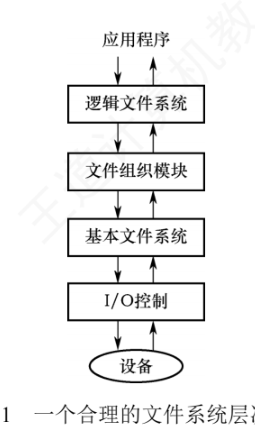
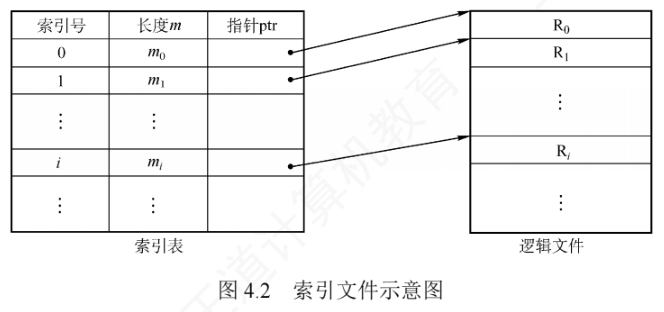
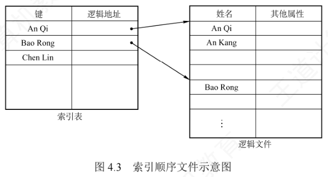

4.1 文件系统基础
进入第 4 章，我们的视角从「如何让程序跑起来」转向「数据如何长期安家」。本节先打理论基础，围绕三个问题展开：文件究竟是什么、文件系统内部怎样分层协作、从用户视角看文件内部数据是如何组织的。教材在本节开头提出了两个思考问题：
- 1）什么是文件？
- 2）文件系统在操作系统中的地位如何？
这两个问题的答案会在 4.1.4 小结中给出。带着问题往下读，理解会更扎实。
4.1.1 文件的基本概念
文件（File）是存放在计算机持久性存储设备（硬盘、固态硬盘等）上的信息集合，内容可以是文本文档、图像、程序代码或其他任何形式的数据。注意区分两个「基本单位」：操作系统能够持久保存信息的基本单位是文件；系统运行时，资源调度与分配以进程为基本单位；而用户做输入/输出时，通常把文件作为逻辑操作的基本对象。绝大多数应用从文件读入数据、把处理结果写回文件，从而实现信息的长期保存与再次访问。为了支撑用户对文件创建、读取、修改、删除和安全保护等需求，操作系统提供了专门的文件系统（File System）来统一管理文件资源。
1. 文件的定义
一个文件必须包含三方面要素：
- 数据本身——存储空间中实际保存的信息；
- 分类与索引信息——操作系统要管理海量数据，必须对数据分类组织，因此每个文件都带有关联的管理信息；
- 访问控制信息——不同用户的访问权限不同，系统需要为文件记录相应的控制信息。
从用户角度看，文件系统是操作系统的重要组成部分。用户关心的是如何命名、分类、查找文件，如何保证数据安全，能对文件做哪些操作；至于文件在外存上如何摆放、外存区域如何管理这类底层细节，通常无需关心。文件系统正是通过对二级存储相关资源的抽象，屏蔽了文件的内部属性、存储介质的物理特性和文件在设备上的具体位置，让用户方便、高效地使用文件。
要弄清文件的内部构造，可以自底向上分三级来定义：
- 数据项——文件系统中最低级的数据组织形式，分为两种：基本数据项是描述对象某一方面属性的一个值，是数据中的最小逻辑单位；组合数据项由若干基本数据项组成。
- 记录——一组相关数据项的集合，用于描述对象某方面的完整属性。例如一条学生记录包含姓名、学号、年龄等数据项。
- 文件——由创建者定义的、具有文件名的一组相关元素的集合，分为有结构文件和无结构文件两类：前者由若干格式相似的记录组成（如一个班级的学生记录）；后者被视为连续的字节流（如二进制文件、普通文本文件）。
需要说明的是，操作系统对文件并没有严格统一的定义。通常程序和数据都以文件形式组织，内容可以是数字、字符或二进制代码，基本访问单元可以是字节，也可以是记录。文件能长期保存在外存中，支持进程间受控共享，还能被组织成复杂的逻辑结构。
2. 文件的属性
除了数据内容本身，操作系统还要维护一系列与文件相关的管理信息（如所有者、创建时间等），这些附加信息统称为文件属性，也叫文件元数据，用于支持文件的管理、保护与检索。不同系统的实现有差异，但通常都包含以下基本属性：
- 名称：文件的标识符，为避免命名冲突，在同一目录内必须唯一；
- 类型：标识文件种类，供系统决定如何处理或打开该文件；
- 创建者：创建该文件的用户 ID；
- 所有者：当前拥有该文件的用户 ID，通常有权修改文件属性或访问权限；
- 位置：指向文件在外存设备上物理存储位置的指针；
- 大小：文件当前占用的存储空间（常以字节、字或块为单位）；
- 保护：访问控制策略，包括读/写、执行等权限；
- 时间信息：创建时间、最后一次修改时间、最后一次访问时间，常用于审计、备份或缓存管理。
3. 文件的分类
为便于管理，操作系统通常把文件划分为若干类型；不同系统的设计理念不同，分类方法也不统一。常见的分类方式有四种：
- 按性质和用途：系统文件、用户文件、库文件；
- 按数据形式：源文件、目标文件（编译过程的中间文件）、可执行文件；
- 按存取控制属性：只读文件、读/写文件、可执行文件；
- 按组织形式与处理方式：普通文件、目录文件、特殊文件（如 UNIX 中把 I/O 设备也抽象成文件来使用，属于特殊文件）。
4.1.2 文件系统结构
文件系统为用户提供高效、便捷的磁盘访问机制，支持数据的存储、定位与提取。它的设计要解决两个核心问题：一是定义用户接口——包括文件及其属性、允许的操作类型、目录结构的组织方式；二是设计相应的算法与数据结构——把逻辑上的文件系统映射到物理外存设备上。现代操作系统支持多种文件系统类型，内部层次结构各不相同，图 4.1 给出了一种合理的分层方案，自上而下共四层。

（1）I/O 控制——最底层，包含设备驱动程序和中断处理程序，负责在内存与磁盘之间传输数据。设备驱动程序把高层命令翻译成底层硬件能识别的特定指令，交给硬件控制器执行，实现 I/O 设备与系统的交互，并向 I/O 控制器指明对设备的哪个具体位置执行何种操作。
（2）基本文件系统——向设备驱动程序发送通用命令，以读取或写入磁盘的物理块，每个物理块由唯一的磁盘地址标识。该层还管理内存缓冲区，缓存文件系统元数据、目录项及数据块；磁盘传输前要先分配并维护合适的缓冲区——缓冲区管理的好坏直接影响系统性能。
（3）文件组织模块——负责建立文件逻辑块与物理块之间的映射，把逻辑块地址转换为物理块地址。文件的逻辑块从 0 开始顺序编号，其编号顺序通常与物理块的实际布局不一致，因此必须经过地址转换机制才能定位。该模块还包含空闲空间管理器，负责跟踪未分配的磁盘块，并按需分配给文件。
（4）逻辑文件系统——最上层，负责管理文件系统的元数据（描述文件系统结构的信息，如文件名、目录项、权限、时间戳等，不含实际数据内容）。它维护目录结构，根据给定文件名向文件组织模块提供所需的元数据；通过文件控制块（FCB）记录各文件的属性与状态，并负责实现文件保护机制。
4.1.3 文件的逻辑结构
文件的逻辑结构指从用户视角看到的文件组织形式；与之相对，文件的物理结构（也称存储结构）指文件在外存上的实际存储方式，对用户透明。逻辑结构与底层存储介质无关，核心是描述文件内部数据在逻辑上如何组织。按逻辑结构不同，文件分为两大类：无结构文件和有结构文件。
1. 无结构文件
无结构文件是最简单的组织形式，由连续的字符流构成，因此也称流式文件，长度以字节为单位。访问时靠读/写指针定位下一个要操作的字节。系统中大量的源程序、可执行文件和库函数都采用这种形式。由于没有显式的记录边界，要检索特定内容只能从头顺序查找，效率较低，因此无结构文件不适合需要频繁随机访问或按记录检索的应用场景。
2. 有结构文件
有结构文件由一个或多个记录组成，也称记录式文件。每条记录由若干数据项组成，数据项的数量和长度可以固定、也可以可变。按记录长度是否一致，有结构文件分为两类：
- 定长记录：所有记录长度相同，各数据项在记录中的位置固定。系统可通过偏移量直接定位任意记录，支持高效的随机访问；
- 变长记录：各记录长度不一——可能因所含数据项数量不同，也可能因某些数据项本身长度可变。由于无法直接算出记录位置，检索通常只能顺序查找，速度较慢。
按记录的组织形式，有结构文件又可分为顺序文件、索引文件、索引顺序文件，此外还有直接文件（散列文件）。
（1）顺序文件——记录按线性顺序依次排列，可采用定长或变长记录。根据记录是否按关键字排序，分为两种结构：串结构，记录按存入时间的先后排列，不按关键字排序，检索必须从头顺序扫描，效率较低；顺序结构，所有记录按关键字有序排列。对于定长且按关键字有序的顺序文件，可通过偏移量直接定位记录，还支持折半查找等高效算法，检索效率高。
正因记录连续存放、访问局部性强，顺序文件在批量存取场景下表现最优：当需要连续读/写大量记录时，其 I/O 效率在所有逻辑文件类型中最高。而且对于顺序存储设备（如磁带），顺序文件是唯一能有效工作的组织形式。反过来，若任务以单条记录的查找、修改、插入、删除为主，顺序文件缺乏直接定位能力、增删还要移动大量数据，性能明显不足。
（2）索引文件——对于定长记录的顺序文件，第 \(i\) 条记录的物理地址可直接计算得到：
\(A_i = i \times L\)（\(L\) 为记录长度）
而对于变长记录的顺序文件，各记录长度不一，无法直接定位目标记录，只能从头依次读取前 \(i-1\) 条记录并累加长度，才能得到第 \(i\) 条记录的起始位置：
$$A_i = \sum_{j=0}^{i-1} L_j$$
这个过程要顺序扫描，效率较低。为提高检索效率，可以建立一张索引表：为每个记录设置一个索引项，其中包含指向该记录的指针及该记录的长度，索引项按关键字排序。索引表本身由定长记录构成，因此可以对索引表进行高效的随机访问。如图 4.2 所示，系统通过索引表直接定位任意记录，把「对变长记录顺序文件的顺序查找」变成了「对定长索引表的随机查找」，检索速度显著提升。

索引文件的代价是：需要额外维护一张索引表，且每个记录对应一个索引项，存储开销随之增加。
（3）索引顺序文件——顺序文件与索引文件的结合，最简单的形式采用一级索引：先把变长记录的顺序文件划分成若干组，再为每组的第一条记录建立一个索引项（含该记录的关键字和指针），所有索引项构成一张按关键字有序的索引表。

以图 4.3 为例：主文件以姓名为关键字（另含其他数据项），记录按姓名首字母分组——组内可以无序，但组间必须按键字有序。每组首记录的姓名及其逻辑地址存入索引表，索引表按姓名递增排序。检索分两步：先在索引表中定位目标记录所属的组，再在该组内顺序查找。
查找工作量能省多少？含 \(N\) 条记录的普通顺序文件平均需查找 \(N/2\) 次。索引顺序文件把记录均分为 \(m\) 组，每组约含 \(s = N/m\) 条记录，查找分为两步：① 索引表中顺序查找，平均 \(m/2\) 次；② 组内顺序查找，平均 \(s/2\) 次。总平均查找次数为：
$$\frac{m}{2} + \frac{s}{2} = \frac{m}{2} + \frac{N/m}{2}$$
当 \(m = \sqrt{N}\) 时该式取最小值，查找效率达到最优。显然，索引顺序文件显著提升了检索效率；当记录数量极大时，还可以引入两级或多级索引进一步降低查找开销——这正是数据结构中分块查找（索引顺序查找）的基本思想。当然，索引文件与索引顺序文件在提速的同时，都因维护索引表而付出额外的存储开销。
（4）直接文件（散列文件）——记录的物理地址由其关键字经散列函数直接计算确定。这种方式支持极快的随机存取，但不同关键字可能映射到同一地址，从而引发冲突问题。
熟悉数据结构的读者会发现：有结构文件的几种逻辑组织方式（顺序、索引、索引顺序、散列），本质上都是围绕「如何高效查找数据」这一核心目标设计的。
4.1.4 本节小结
本节开头提出的两个问题，参考答案如下。
1）什么是文件？
文件是操作系统中用于存储和组织数据的基本单位，是一组逻辑上相关的信息（如程序、文本、图像等）的有序集合，通常以一个名字标识，并保存在硬盘等持久性存储设备上。
2）文件系统在操作系统中的地位如何？
文件系统是操作系统的核心子系统之一，负责对存储设备上的文件和目录进行统一管理，提供创建、读取、写入、删除、组织及保护等基本操作。它向上为应用程序和用户提供简洁、一致的抽象接口，屏蔽底层存储细节；向下与设备驱动协同，高效调度物理存储资源。作为连接用户逻辑视图与物理存储之间的关键桥梁，文件系统在操作系统中扮演着承上启下的核心角色。